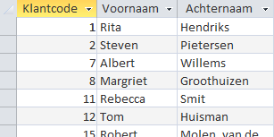

Opgave: quer023 - Klanten voor Zoet en bitter
Geef een alfabetisch overzicht van de klanten die in 2009 minstens 1 doos Zoet en
bitter
gekocht hebben. Zorg er voor dat er geen dubbele records in het
queryresultaat worden weergegeven. Sla de query op onder de naam
quer023.
Tip: Dezelfde klant kan vaker dan 1 keer in het overzicht voorkomen. Om dit
te vermijden moet bij de eigenschappen van de query de waarde van de eigenschap
Unieke waarden op Ja ingesteld
worden.
Antwoord
Waarschuwing: Het verkregen antwoord kan afwijken door afhankelijkheid van eerder gemaakte opdrachten.